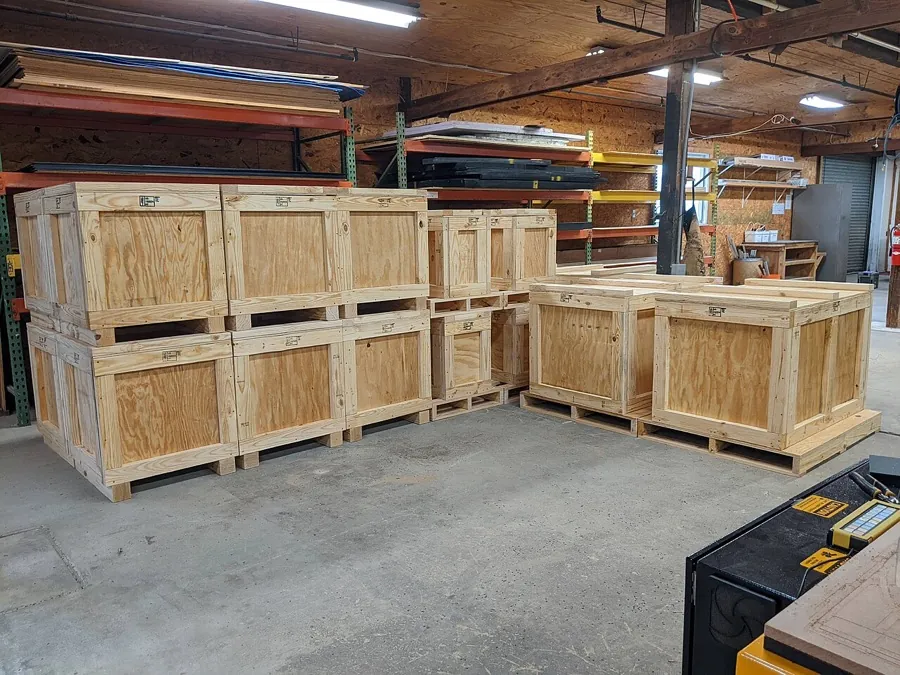

Caisse bois & emballage sur-mesure
Pour caler, protéger et expédier vos marchandises sans mauvaise surprise, Bois Tunisie assemble des caisses et des emballages bois robustes, taillés aux dimensions exactes de vos produits.
Un emballage bois adapté à vos marchandises
Nos caisses bois sont dimensionnées pour les charges lourdes, fragiles ou encombrantes. Le bois assure une protection mécanique solide face aux chocs et à l'empilage, pendant le stockage comme pendant le transport. Chaque caisse est construite sur-mesure : dimensions, résistance et montage sont ajustés à votre produit, qu'il s'agisse de pièces industrielles, d'équipements ou de lots prêts à partir.
Ces emballages bois couvrent des usages industriels et logistiques variés : expédition, stockage de longue durée, calage d'ensembles volumineux ou protection de matériel sensible. Décrivez-nous votre besoin et nous vous orientons vers l'emballage le plus pertinent.
Option export et traitement ISPM 15
Vos envois partent à l'étranger ? Les caisses se préparent pour l'export, avec l'option de traitement thermique ISPM 15 (HT) selon le pays de destination. Bois Tunisie vous aide à retenir le format et le traitement conformes à vos marchés.

Questions fréquentes
Réalisez-vous des caisses bois aux dimensions de mes produits ?
Oui, Bois Tunisie assemble des caisses et des emballages bois taillés à vos cotes. Transmettez-nous les dimensions, le poids et la nature des marchandises à caler, et nous définissons le montage d'emballage le mieux adapté.
Vos caisses peuvent-elles partir à l'export ?
Oui. Les caisses se préparent pour l'expédition internationale, avec l'option de traitement thermique ISPM 15 (HT) selon le pays visé. Indiquez-nous votre marché d'arrivée pour caler le format et le traitement nécessaires.
Avec quel bois travaillez-vous ?
Nous façonnons le bois en caisses robustes pensées pour la protection et le calage pendant le transport. Essences et épaisseurs se choisissent selon la charge et l'usage ; décrivez votre besoin et nous recommandons l'assemblage adéquat.